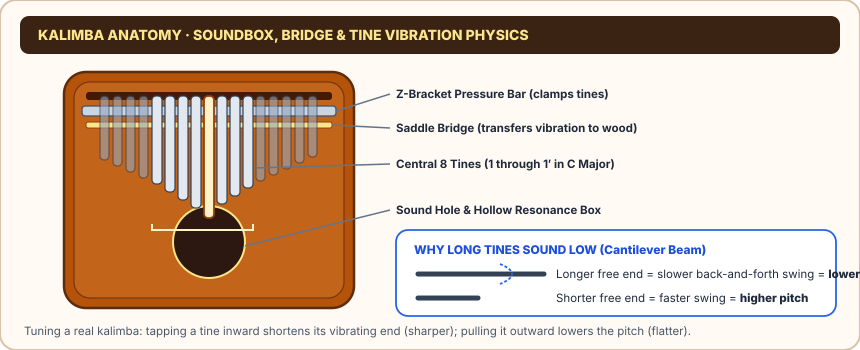
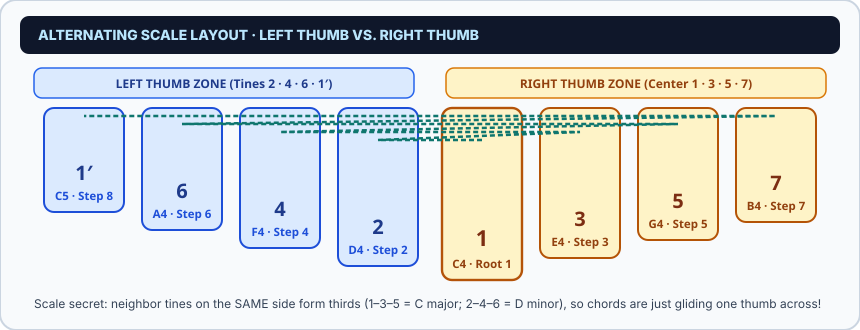

First sound on a kalimba
- Support the sides with your hands and leave your thumbs free. Put a thumb on the tip of the long center tine, press lightly, and let your thumb slip off so the tine rings.
- Find 1 (C4), 2 (D4) just to its left, then 3 (E4) just to its right. Try right, left, right. Continue outward to 7 (B4) and finish on 1′ (C5).
- Open Practice, listen to the scale, then play it one note at a time. Try the eight-note melody with one note per beat. Sing it first if you lose your place.
Read the numbers and hear the physics
Each metal key is called a tine. Longer free ends generally vibrate more slowly and sound lower. Here, 1 through 7 are the notes C–D–E–F–G–A–B. The prime mark in 1′ means the same note name one octave higher. These eight tines also appear in the middle of a common 17-tine C-major layout. Check the note labels on your own instrument, since tunings vary. See how the eight tines fit a 17-tine kalimba.


Kalimbas belong to the lamellophone family, in which flexible tongues vibrate after being plucked. African lamellophones have distinct local names, tunings, and musical traditions. Explore a kalimba from Zambia or Zimbabwe in The Met’s collection.
History of lamellophones & the kalimba
- Early bamboo and palm-rib plucked-tongue instruments appear along Africa's west-central river valleys.
- Iron smelting in the Zambezi Valley allows Shona and neighboring makers to forge durable metal-tined mbira and likembe.
- Ethnomusicologist Hugh Tracey introduces the Western-tuned "Kalimba" model based on African lamellophone craftsmanship.
- Players enjoy both traditional mbira/sanza tunings and numbered diatonic kalimbas across folk, pop, and classroom music.
Show what you learned
Play the lowest and highest C in this model. Describe what sounds alike and what sounds different. Make up a four-beat melody using 1, 2 and 3 that ends on 1, then teach it to a partner by writing its numbers.
Compare the ukulele’s plucked strings · Find the same C-major notes on piano